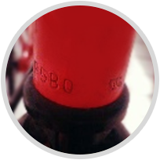
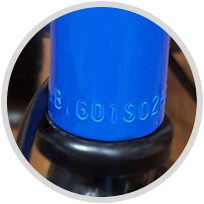

고양특례시는 고유번호인 차대번호와 소유자를 등록하고 인증스티커를 부착하는 자전거 등록제를 시행 합니다. 고양시 시민 누구나 스마트폰 및 홈페이지를 통한 등록 및 도난신고 · 말소신고를 할 수 있습니다. 자전거 도난의 걱정과 방치 자전거로 인한 도심문화 저해 등 사회문제는 시민여러분의 적극적인 관심과 참여로 해결할 수 있습니다.
차대번호란?
자전거 차대번호는 자전거 생산자가 부여한 자전거의 고유번호입니다.
자전거의 프레임에 음각되어 알파벳과 숫자로 구성됩니다.
(예시) P8EZj0111, F10136584, OK70904444 EMD)


차대번호 확인방법
차대번호가 새겨져 있는 위치는 자전거마다 다르지만 보통 다음의 5곳 중 한 곳에 새겨져 있습니다.